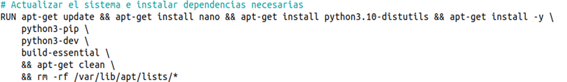
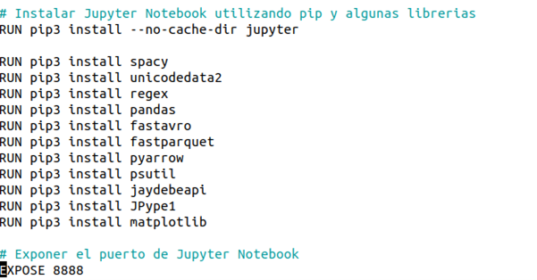
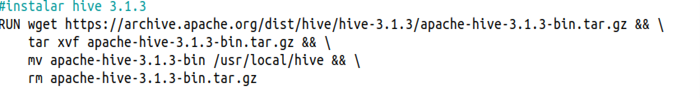
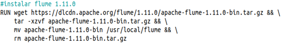
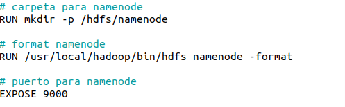
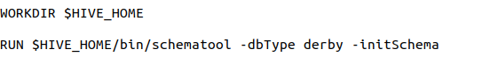
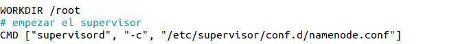

Capítulo 4. Arquitectura de Contenedores para el Despliegue del Entorno Big Data
Arquitectura de Contenedores para el Despliegue del Entorno Big Data
Arquitectura de Contenedores para el Despliegue del Entorno Big Data
El NameNode es el componente principal del sistema de archivos distribuido de Hadoop (HDFS). Su función consiste en gestionar la estructura lógica del sistema de almacenamiento distribuido, manteniendo la información sobre la ubicación de los bloques de datos y la organización de directorios y archivos.
Aunque los datos se almacenan físicamente en los DataNodes, el NameNode actúa como punto central de coordinación del clúster, permitiendo que los clientes y aplicaciones localicen rápidamente la información distribuida. Debido a esta responsabilidad, constituye uno de los componentes más críticos de toda la arquitectura Hadoop.
La construcción comienza utilizando como punto de partida la imagen hadoop-base, desarrollada previamente. Esta imagen ya incorpora Ubuntu, Java, Hadoop, Python, Jupyter Notebook y la configuración básica del clúster.

Figura. Imagen base utilizada para construir el NameNode.
Sobre la imagen base se instalan diferentes herramientas necesarias para ampliar las funcionalidades del nodo principal del clúster.
| Componente | Finalidad |
|---|---|
| Herramientas Linux | Administración del sistema. |
| Utilidades de red | Comunicación entre servicios. |
| Librerías Python | Prácticas Big Data. |
| Supervisor | Gestión automática de procesos. |

La imagen incorpora Jupyter Notebook y las librerías necesarias para el desarrollo de ejercicios prácticos basados en Python y Hadoop Streaming.

Se instala Apache Hive como infraestructura de almacenamiento y consulta de datos sobre HDFS, permitiendo ejecutar consultas SQL mediante HiveQL.

La imagen incorpora Apache Flume para facilitar la ingestión de datos desde sistemas externos hacia HDFS.

Durante la construcción de la imagen se crea el directorio destinado al almacenamiento de los metadatos del sistema HDFS, se realiza el formateo inicial del NameNode y se configuran los puertos necesarios para el acceso a los diferentes servicios.
| Acción | Descripción |
|---|---|
| Creación del directorio namenode | Almacenamiento de metadatos HDFS. |
| Formato inicial | Inicialización del sistema de archivos. |
| Puertos | Exposición de los servicios del NameNode. |

Para permitir el funcionamiento de Apache Hive se crea automáticamente la base de datos metastore_db, donde se almacenan los metadatos del catálogo de Hive.

Finalmente, todos los servicios necesarios del NameNode son gestionados mediante Supervisor, encargado de iniciar automáticamente Hadoop, HDFS, YARN, Hive y el resto de procesos cuando el contenedor se pone en funcionamiento.

La imagen Docker del NameNode constituye el núcleo de la infraestructura Hadoop propuesta. A partir de la imagen base se incorporan todas las herramientas necesarias para gestionar HDFS, ejecutar consultas mediante Hive, desarrollar prácticas con Jupyter Notebook e integrar mecanismos de ingestión de datos mediante Apache Flume, proporcionando un entorno completo para el aprendizaje de tecnologías Big Data.
El código completo empleado para construir esta imagen puede consultarse en el Anexo 7.1.2 — Dockerfile NameNode.